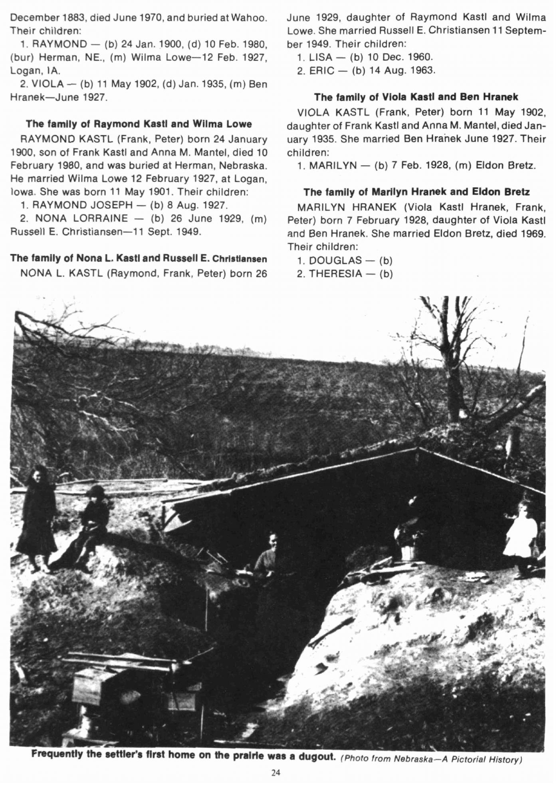
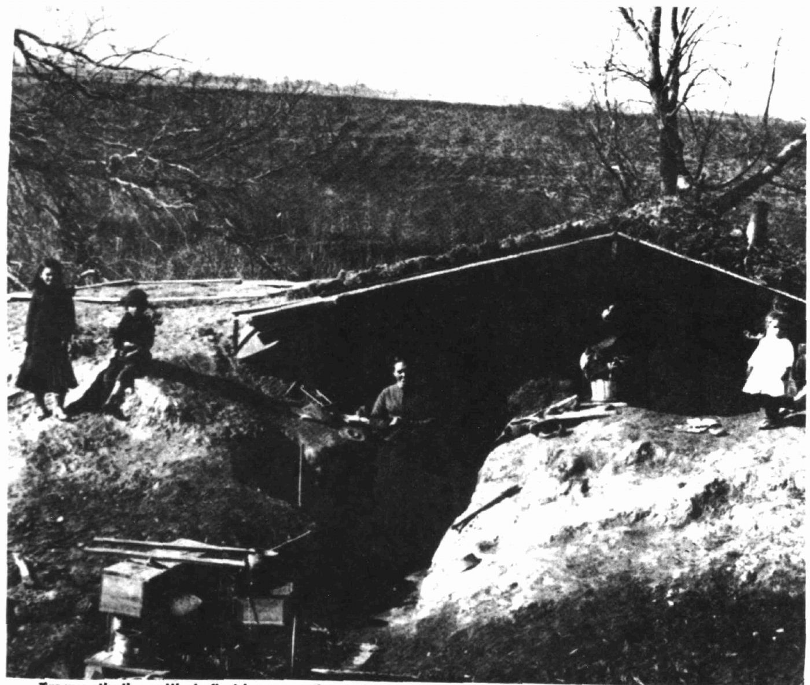

The book · The Family of Peter Kastl
Page 24 The family of Raymond Kastl and Wilma Lowe


Transcription
December 1883, died June 1970, and buried at Wahoo. Their children:
- RAYMOND — (b) 24 Jan. 1900, (d) 10 Feb. 1980, (bur) Herman, NE., (m) Wilma Lowe—12 Feb. 1927, Logan, IA.
- VIOLA — (b) 11 May 1902, (d) Jan. 1935, (m) Ben Hranek—June 1927.
The family of Raymond Kastl and Wilma Lowe
RAYMOND KASTL (Frank, Peter) born 24 January 1900, son of Frank Kastl and Anna M. Mantel, died 10 February 1980, and was buried at Herman, Nebraska. He married Wilma Lowe 12 February 1927, at Logan, Iowa. She was born 11 May 1901. Their children:
- RAYMOND JOSEPH — (b) 8 Aug. 1927.
- NONA LORRAINE — (b) 26 June 1929, (m) Russell E. Christiansen—11 Sept. 1949.
The family of Nona L. Kastl and Russell E. Christiansen
NONA L. KASTL (Raymond, Frank, Peter) born 26 June 1929, daughter of Raymond Kastl and Wilma Lowe. She married Russell E. Christiansen 11 September 1949. Their children:
- LISA — (b) 10 Dec. 1960.
- ERIC — (b) 14 Aug. 1963.
The family of Viola Kastl and Ben Hranek
VIOLA KASTL (Frank, Peter) born 11 May 1902, daughter of Frank Kastl and Anna M. Mantel, died January 1935. She married Ben Hranek June 1927. Their children:
- MARILYN — (b) 7 Feb. 1928, (m) Eldon Bretz.
The family of Marilyn Hranek and Eldon Bretz
MARILYN HRANEK (Viola Kastl Hranek, Frank, Peter) born 7 February 1928, daughter of Viola Kastl and Ben Hranek. She married Eldon Bretz, died 1969. Their children:
- DOUGLAS — (b)
- THERESIA — (b)


People from the line of descent on this page
- Anna M. Mantel 1883–1970
- Raymond Kastl 1900–1980
- Viola Kastl 1902–1935
- Wilma Lowe b. 1901
- Raymond Joseph Kastl b. 1927
- Nona Lorraine Kastl b. 1929
- Lisa Christiansen b. 1960
- Eric Christiansen b. 1963
- Marilyn Hranek b. 1928
- Douglas Bretz
- Theresia Bretz
Transcriber’s notes
Opening words 'December 1883, died June 1970...' continue the Frank Kastl/Anna M. Mantel entry broken off at the end of p.22 ('She was born 19'); the intervening scan s025 (p.23) is a full-page photo. In the Viola Kastl entry 'Ben Hranek' shows a small mark over the n that may be a diacritic or a print speck; transcribed as 'Hranek'. Photo caption source note is in italics in the print.